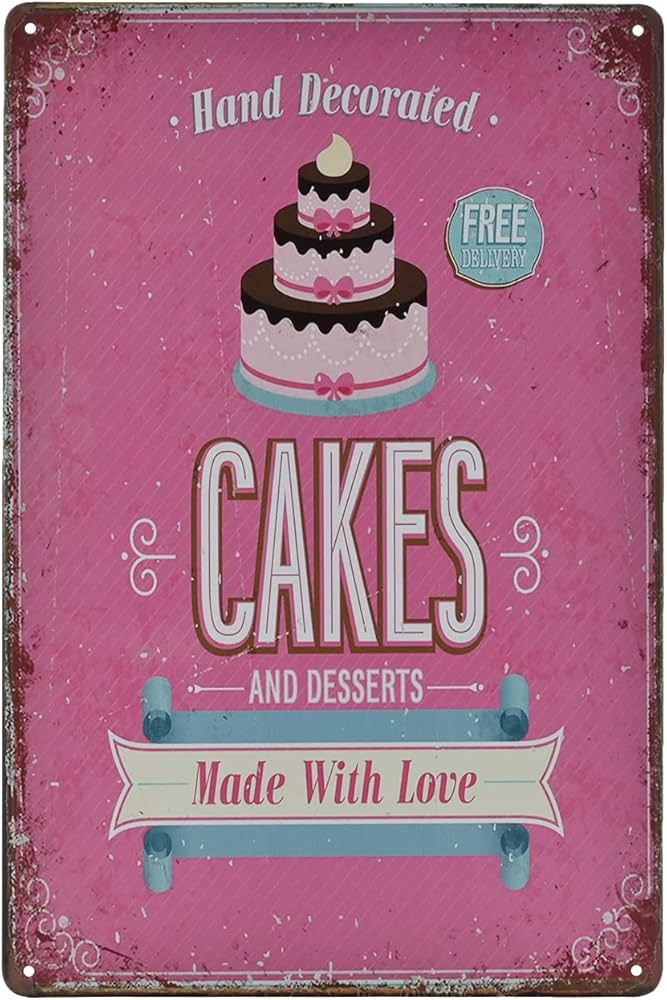

ingridians:
- eggs 2
- suger 1 tablespoon
- vanilla extract 1 teaspoon
- melted butter 30 grams
- millk 1 glass
- flour 1 glass
- salt quarter teaspoon
how to make it
- mix all of the ingridians until you cant see lumps
-
Heat the pan add oil then put the a small part of the mixing
in the pan it until it cooks on one side then flip it, wait until the other side cooks
and then put it in a plate. repet until you have no more mixing
